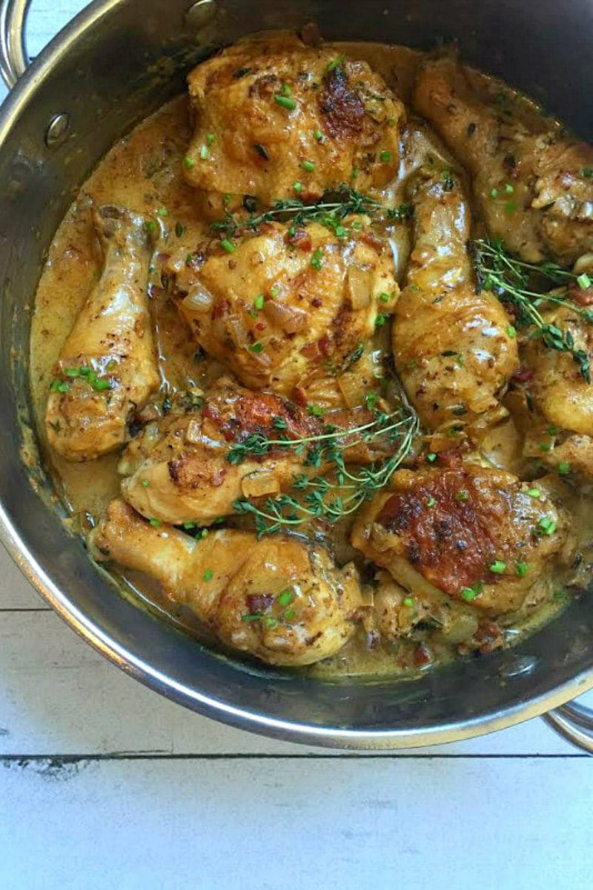

Mustard-thyme Chicken

Description
This is healthy, herby and tasty chicken without heavy cream, oils or strong spices! It's very good for you when you have to eat something lighter and healthier. You can serve it with rice, potatoes, sweet potatoes...
Ingredients
- Chicken breasts
- Thyme (fresh or dehydrated)
- Mustard
- Honey
- Water and flour (for thickening)
- Optional: yoghurt and butter
Steps
- Marinate your chicken in mustard, thyme and other spices, without oil or salt.
- Put the chicken in the pan and sear it until little golden on both sides, don't worry about the sticking, just don't take this step take too long.
- Add enough water for chicken to be submerged, scrape the pan and let it cook for 5 or more minutes, add honey and salt here.
- Taste the sauce and if needed, spice it up, add yoghurt and flour mixed into a little water.